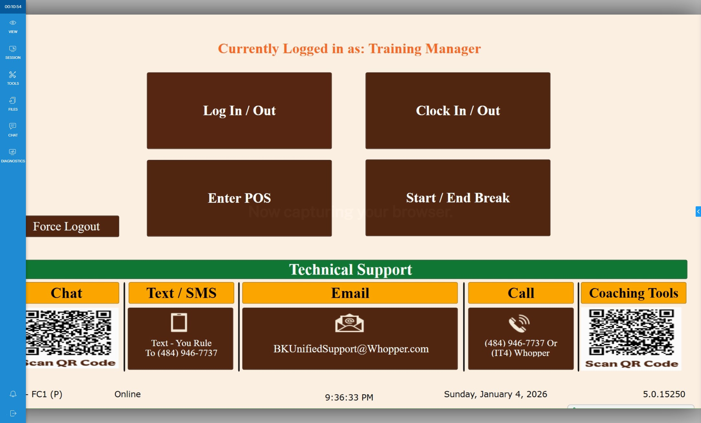
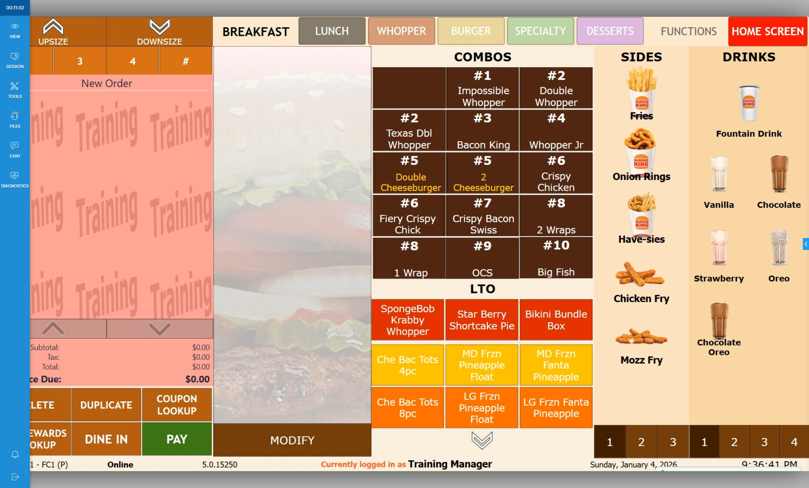
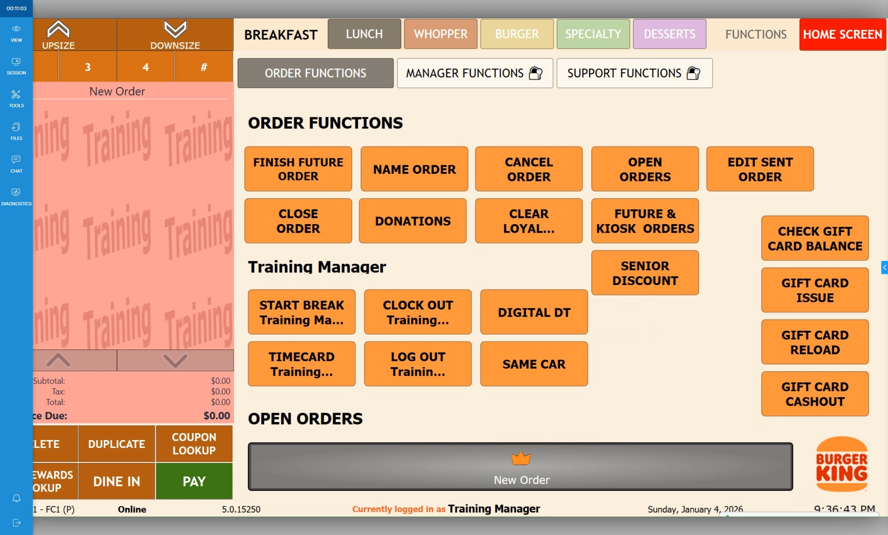
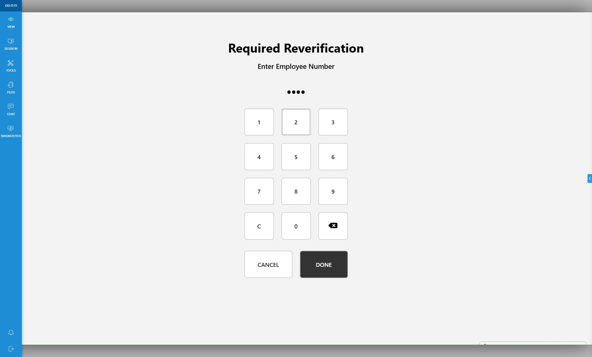
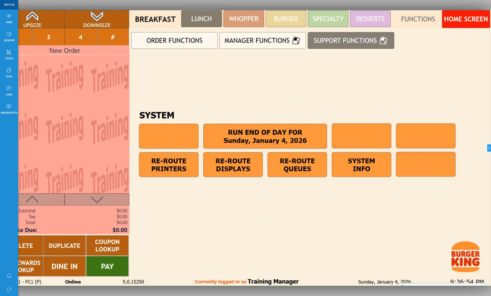
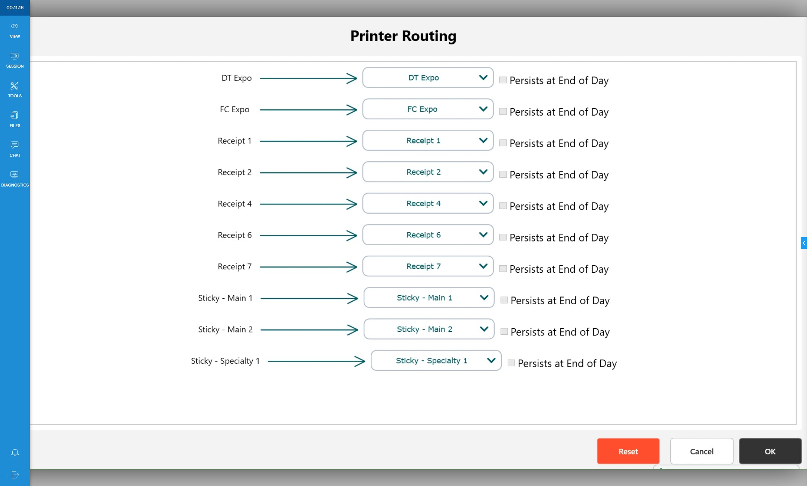
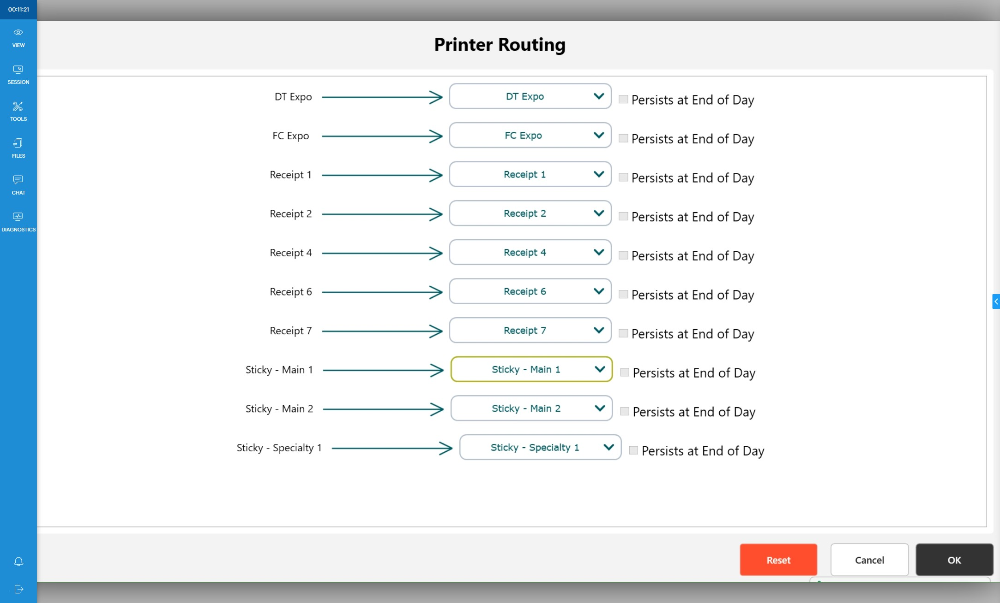

-
Warning
If changing KDS routing, Navigate to : Adjust KDS Routing before adjusting printers.
-
1Click "Enter POS"

-
2Click "Functions"

-
3Click "Support Functions"

-
4Slide card or enter PIN

-
5Click "Re-Route Printers"

-
6Select which printer you want to reroute.

-
7Click "OK"
